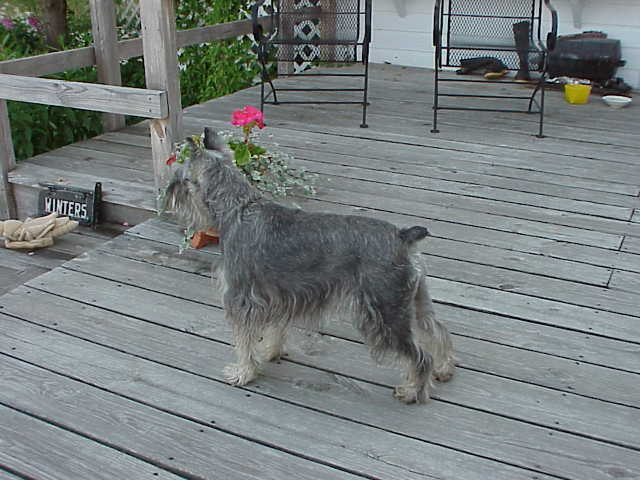
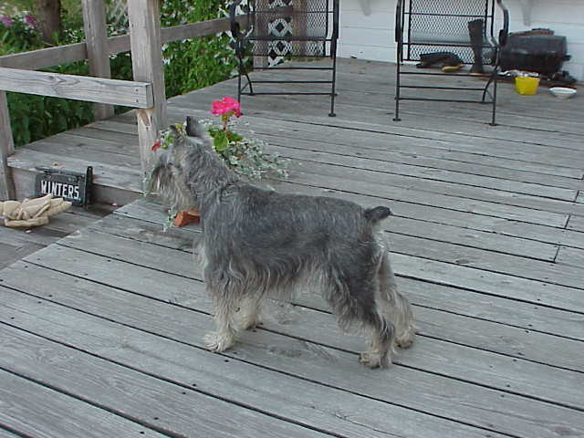

Contest! Normally we see pictures in the order in which they were taken, but these are ordered alphabetically by the names Bill used for the disk files. For example, the first picture on disk 1 is called "alex 3", the next one is "alex&nancy", the next one is "alex2", etc. (Note that the space in "alex 3" makes it come before "alex2" with no space.) Figure out the names of the pictures and win a prize!
 
